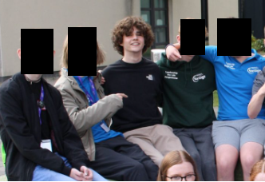

My name is Conor Collins, I am 15 years old and I live in kildare.
 (Me at the Leadership for Life Conference in Maynooth)
Where I would like to work
If I was to get the chance to become an intern or employee at
G
o
o
g
l
e
, the departments I would be most interested in are Marketing or UI and UX .
UI and UX would be my favourite role. I find it fascinating to see how apps utilise things such as the touch zone on a phone to improve the user experience. I would love to see the inner thoughts that happen for each update such as the move from long form videos(around 10 minutes) to the new youtube shorts 30 second videos that are being pushed.
Marketing interests me as I find it extremely cool to see how people are attracted to certain links or products. Marketing was one of my best and favourite subjects during Junior Cert.
What makes me
G
o
o
g
l
e
y
I've always loved working in a group environment. I grew up and live in a small village where, thanks to dedicated and involved community leaders, there is a strong community spirit in the area. I have been part of a youth club called Foroige since I was 11 and I'm constantly engaging in community work, charity events and team building ventures. I feel I have lots of leadership qualities. I attended the leadership for life conference in Maynooth to gain leadership skills as this will help me be of service to my community and others. I want to build on these leadership skills throughout my life.
I want to be in a place where going the extra mile and helping others is appreciated just as much as completing your tasks is.
I have always been interested in the Internet, Youtube, Coding and Computers. I built my computer with my older brother when I was younger, I'm still excited about computers and how they are made and have built some for my friends. When I was in primary school, I filmed videos and uploaded them to my Youtube channel. I originally started this as an experiment, when I went on youtube I saw fake clickbait videos with millions of views, and I wanted to see if I could repeat this process and yield similar results. I enjoyed all of this and learned a lot about video editing, how to make things eye catching, and building a personal brand.